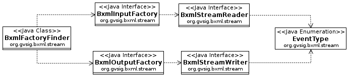

Defines an API for the streamed parsing (inspired in the XML pull/push
StAX API) and serialization of XML structured documents encoded in a
binary format as defined by the OGC BinaryXML Best Practices Document, v
0.0.8.
Package Specification
##### FILL IN ANY SPECS NEEDED BY JAVA COMPATIBILITY KIT #####
Related Documentation
For overviews, tutorials, examples, guides, and tool documentation,
please see:
